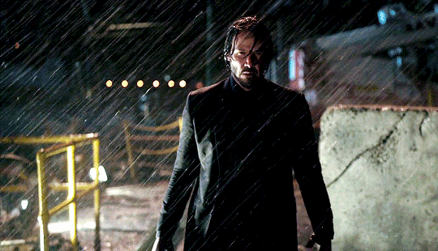
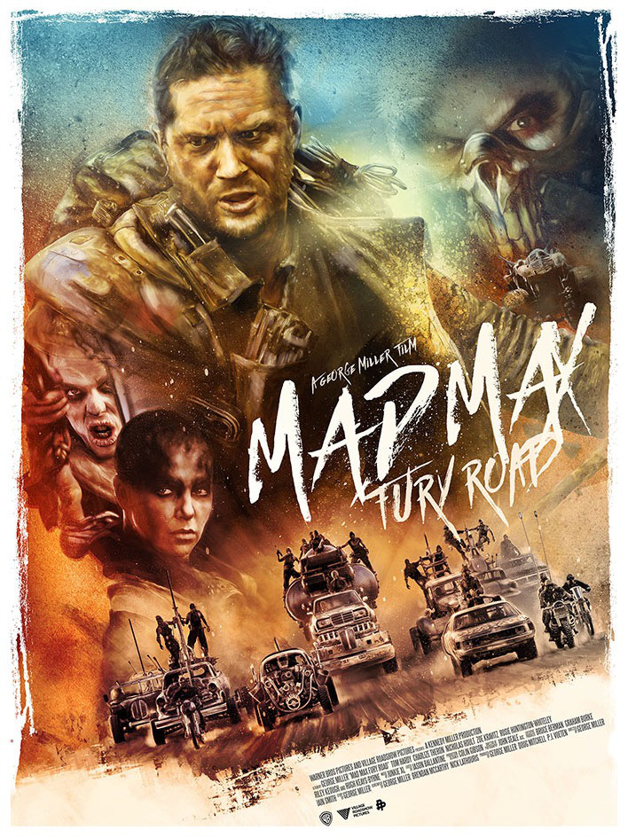

Bueno, seamos honestos, el argumento de John Wick verdaderamente es tan simple y somero que se puede resumir en dos líneas, pero lo impresionante es que eso no molesta en absoluto porque el verdadero talento está en la narrativa, en cómo se desenvuelve la historia. Tanto es así que da igual que la originalidad además brille por su ausencia, la hipnótica carnicería que lleva a cabo Keanu Reeves, los curiosos lugares que visita y la galería de personajes de la que se rodea son un imán; desde el Hotel Continental que solo aloja asesinos y donde está prohibido matar (jis jis), hasta los limpiadores que se encargan de dejarlo todo impoluto.
John Wick actualizaba así un catálogo de referentes propios del cine policíaco, el 'thriller' de venganza y la acción en diversas de sus declinaciones. Los responsables del filme, Chad Stahelski y David Leitch, debutaban como realizadores tras años trabajando como especialistas en el cine de acción. Su oficio se plasmaba en la pantalla en unas escenas coreografiadas con la precisión y la 'fiscisidad' del cine de artes marciales y la contundencia de las películas norteamericanas de los setenta. Wick, por su parte, pertenece a ese antiguo linaje de asesinos solitarios de pocas palabras y actos expeditivos. El mérito de Stahelski y Leitch, y del guion de Derek Kolstad, consistía en integrar todos estos referentes tan reconocibles en un universo con vida propia.

Otras películas
|  |